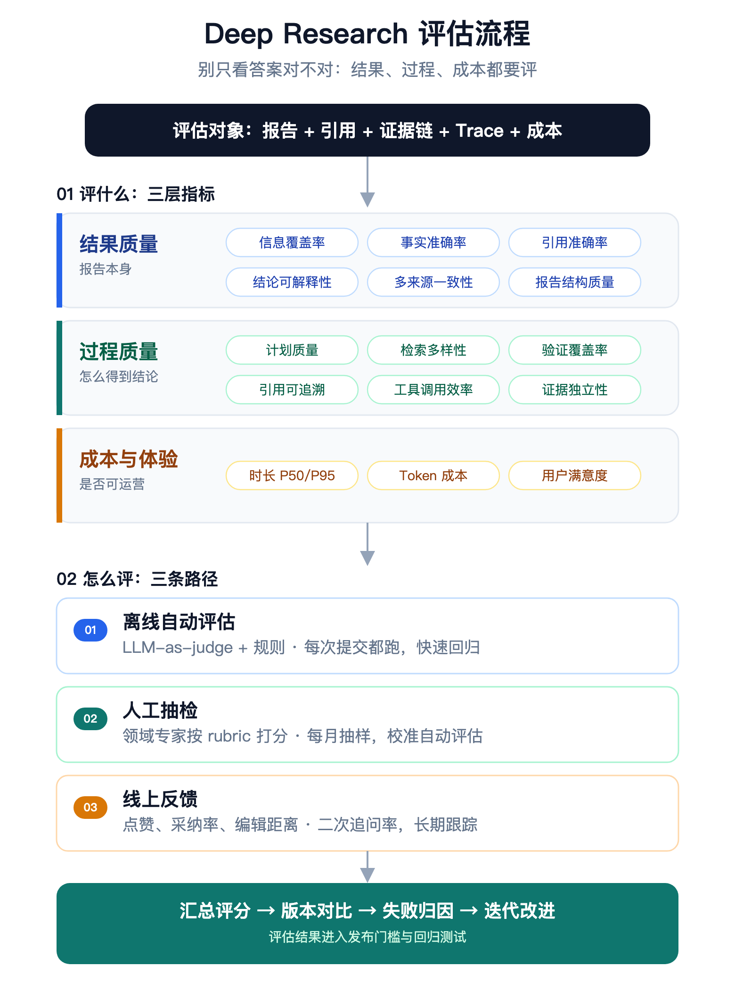

Deep Research 技术详解（下）：评估、场景、趋势与落地建议
怎么衡量研究质量，能用在哪些场景，以及团队如何起步
前两篇讲了原理、模块、工作流和架构。最后一篇，我们把视角拉回业务：它到底能用在哪些场景？未来会往哪走？如果团队现在要动手，应该怎么起步？
08 | 怎么评估
Deep Research 不能只看“答案对不对”，要从结果、过程、成本三个层面设计指标。

图示：先看结果、过程、成本三层指标，再走离线自动、人工抽检、线上反馈三条路径，最后汇总评分并进入回归。
下面先看指标总表，再看三条评估路径。
| 指标 | 怎么衡量 | 注意 |
|---|
| 信息覆盖率 | 已覆盖子问题 / 关键子问题总数 | 同时看计划覆盖和目标覆盖 |
| 事实准确率 | 被证据支持的事实句 / 抽样句 | 区分事实、推断、建议 |
| 引用准确率 | 引用确实支持句子的比例 | 同时看 precision 和 recall |
| 结论可解释性 | rubric 打分：证据链、限定、反证 | 多人标注，算一致性 |
| 多来源一致性 | 支持来源 / 独立来源 | 注意口径差异和伪多源 |
| 报告结构质量 | rubric：大纲、层次、重复、术语 | LLM 初筛 + 人工校准 |
| 任务完成时间 | P50 / P95，分阶段统计 | 长尾比均值更重要 |
| Token 成本 | 各模型输入输出 Token × 单价 | 含重试、失败、缓存命中 |
| 用户满意度 | 点赞、CSAT、采纳率、编辑距离 | 线上长期跟踪 |
建议三层评估：
- 离线自动评估：覆盖率、引用准确率、结构质量，快速回归；
- 人工评测：每月抽样几十个任务，专家按 rubric 打分，校准自动评估；
- 线上评估：反馈、采纳率、成本、延迟，持续监控。
公开基准可以参考，但题型可能和业务不匹配，也可能被过拟合，需要定期复核。
09 | 典型应用场景
| 场景 | 最看重什么 |
|---|
| 投资研究 | 一手来源、数字口径、时效、合规免责 |
| 市场调研 | 多源三角验证、TAM/SAM/SOM 口径 |
| 学术综述 | 论文覆盖、引用真实、奠基工作与最新进展 |
| 技术选型 | 许可证、社区、性能、运维、迁移成本 |
| 法律合规 | 法域明确、法规时效、原文引用、人工复核 |
| 竞品分析 | 多维对比、区分宣传与真实能力 |
| 企业知识管理 | 权限隔离、版本管理、内部文档引用 |
| 安全情报 | 来源可信、CVE 交叉验证、授权范围内使用 |
几个共性要求：
- 高风险场景必须有人工闸门。法律、合规、投资、安全类报告，关键结论要人工确认后才能对外使用。
- 一手来源永远优先。财报、法规、官方文档、论文，比二手报道可靠得多。
- 不确定性要写进报告。哪些是事实、哪些是推断、哪些证据不足，读者需要知道。
10 | 未来会往哪走
1. 多模态。
不只读文本，还要读图表、表格、截图、视频、音频，以及需要点击翻页的动态网页。难点是图表理解、表格结构还原、跨模态证据对齐。
2. 更强的自主规划。
用强化学习训练规划策略，用树状搜索优化计划，根据历史任务学习预算分配。越自主越需要可观测性和人工干预。
3. 与私有知识库深度结合。
公开网络 + 内部文档 + 结构化数据库的混合检索，权限感知，增量索引，领域微调。
4. 可验证 Agent。
每个结论有证据链和置信度，引用能回链到原文位置，推理过程可回放，支持第三方审计。这会推动证据标准和评估基准成熟。
5. 长上下文与 Workflow 结合。
两者不是替代关系。Workflow 管流程，长上下文做单步深读；中间可能长出一个独立的“上下文管理器”。
6. 人机协同。
人定义问题、设定标准、审核结论；系统负责检索、整理、初步分析。交互从“一次性提问”变成“共同编辑研究计划”。
7. 从报告走向决策。
情景模拟、敏感性分析、选项对比、与 BI 集成、行动建议。不只回答“发生了什么”，还要回答“如果怎么做会怎样”。
11 | 总结
Deep Research 的核心价值，不是写得更长，而是：
- 把研究过程工程化：计划、检索、验证、综合都有明确状态；
- 把结论建立在证据上：可追溯、可复核；
- 把人的时间从信息搬运中解放出来；
- 把研究能力规模化。
它的本质是：
面向复杂问题的信息获取、验证、推理与综合系统。
模型是控制器，检索是感官，验证是免疫系统，报告是输出。任何一个环节薄弱，整体质量都会下降。
给工程团队的 8 条建议
- 先做证据层，再做报告层。 抓取、解析、切片、抽取、引用定位做扎实，报告才有说服力。
- 定义一个领域的最小可用标准。 明确必须覆盖的维度、合格证据类型、什么算完成。
- Planner 做成可替换组件。 早期用固定模板 + LLM 填充，后期再引入动态规划。
- 预算和停止条件必须硬编码。 搜索次数、文档数、Token、时长、迭代轮次，缺一不可。
- 引用校验做成独立服务。 不要寄托在生成模型的自觉上，生成后逐句校验。
- 建立 trace 和回放能力。 没有 trace，就无法定位“为什么这份报告是错的”。
- 评估集来自真实业务问题。 公开基准只能参考，gold set 要用自己的历史任务构建。
- 先做异步任务，再做同步产品。 分钟级任务配“提交 + 进度 + 下载”，体验远好于转圈等待。
最后一句：
Deep Research 的难点不在“生成”，而在“获取、判断和验证”。 这三点做好，报告自然有说服力；做不好，再强的模型也只是在更高效地生产不可信的内容。
如果这篇文章对你有帮助，欢迎点个“在看”，或者留言聊聊你们正在落地的研究型 Agent 场景。
这个系列到这里就结束了。如果大家感兴趣，后面可以单独拆解：如何为 Deep Research 构建一套可用的评估集。
参考文献
以下文献是本文方法与观点的主要来源，也可作为延伸阅读；未在正文中逐条标注引用。为便于公众号阅读，仅保留 arXiv 编号与发表信息，未附外链。
- Mialon, G., et al. GAIA: A Benchmark for General AI Assistants. ICLR 2024. arXiv:2311.12983.
- Wei, J., et al. BrowseComp: A Simple Yet Challenging Benchmark for Browsing Agents. arXiv:2504.12516, 2025.
- Du, M., et al. DeepResearch Bench: A Comprehensive Benchmark for Deep Research Agents. arXiv:2506.11763, 2025.
- Phan, L., et al. Humanity's Last Exam. arXiv:2501.14249, 2025.
- Min, S., et al. FActScore: Fine-grained Atomic Evaluation of Factual Precision in Long Form Text Generation. EMNLP 2023. arXiv:2305.14251.
- Bohnet, B., et al. Attributed Question Answering: Evaluation and Modeling for Attributed Large Language Models. arXiv:2212.08037, 2022.
- Es, S., et al. RAGAS: Automated Evaluation of Retrieval Augmented Generation. EACL 2024 Demo. arXiv:2309.15217.
- Zheng, L., et al. Judging LLM-as-a-Judge with MT-Bench and Chatbot Arena. NeurIPS 2023. arXiv:2306.05685.
- Huang, Y., et al. Deep Research Agents: A Systematic Examination and Roadmap. arXiv:2506.18096, 2025.
- Jin, B., et al. Search-R1: Training LLMs to Reason and Leverage Search Engines with Reinforcement Learning. COLM 2025. arXiv:2503.09516.
- Li, X., et al. WebThinker: Empowering Large Reasoning Models with Deep Research Capability. NeurIPS 2025. arXiv:2504.21776.
- Zheng, Y., et al. DeepResearcher: Scaling Deep Research via Reinforcement Learning in Real-world Environments. EMNLP 2025. arXiv:2504.03160.
- OpenAI. Deep Research System Card. 2025.